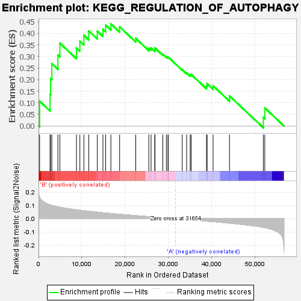
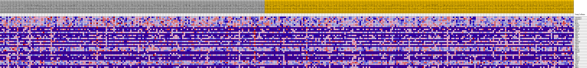
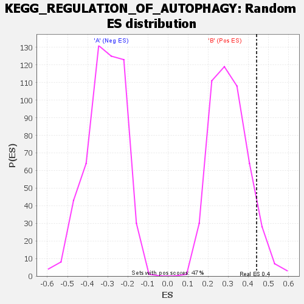

| | | Dataset | my.my.cls#B_versus_A.my.cls#B_versus_A_repos |
| Phenotype | my.cls#B_versus_A_repos |
| Upregulated in class | B |
| GeneSet | KEGG_REGULATION_OF_AUTOPHAGY |
| Enrichment Score (ES) | 0.44111735 |
| Normalized Enrichment Score (NES) | 1.4427842 |
| Nominal p-value | 0.07643312 |
| FDR q-value | 0.61367834 |
| FWER p-Value | 0.82 |
Table: GSEA Results Summary

Fig 1: Enrichment plot: KEGG_REGULATION_OF_AUTOPHAGY
Profile of the Running ES Score & Positions of GeneSet Members on the Rank Ordered List
| SYMBOL | TITLE | RANK IN GENE LIST | RANK METRIC SCORE | RUNNING ES | CORE ENRICHMENT | | 1 | GABARAPL1 | na | 248 | 0.161 | 0.1071 | Yes |
| 2 | GABARAPL2 | na | 2659 | 0.104 | 0.1363 | Yes |
| 3 | ULK2 | na | 2773 | 0.103 | 0.2054 | Yes |
| 4 | ULK1 | na | 3069 | 0.100 | 0.2694 | Yes |
| 5 | BECN1 | na | 4465 | 0.089 | 0.3064 | Yes |
| 6 | PIK3C3 | na | 4924 | 0.086 | 0.3578 | Yes |
| 7 | ATG4B | na | 8756 | 0.067 | 0.3364 | Yes |
| 8 | IFNA14 | na | 9544 | 0.064 | 0.3666 | Yes |
| 9 | PRKAA2 | na | 10461 | 0.060 | 0.3919 | Yes |
| 10 | IFNA8 | na | 11585 | 0.056 | 0.4107 | Yes |
| 11 | ATG3 | na | 13556 | 0.049 | 0.4096 | Yes |
| 12 | IFNA16 | na | 14861 | 0.044 | 0.4172 | Yes |
| 13 | IFNG | na | 15482 | 0.042 | 0.4357 | Yes |
| 14 | IFNA5 | na | 16693 | 0.039 | 0.4411 | Yes |
| 15 | ATG5 | na | 18714 | 0.033 | 0.4283 | No |
| 16 | IFNA2 | na | 22431 | 0.023 | 0.3786 | No |
| 17 | GABARAP | na | 25447 | 0.015 | 0.3360 | No |
| 18 | IFNA6 | na | 25972 | 0.014 | 0.3364 | No |
| 19 | ATG12 | na | 26833 | 0.012 | 0.3294 | No |
| 20 | IFNA4 | na | 26855 | 0.012 | 0.3371 | No |
| 21 | ATG4A | na | 28674 | 0.007 | 0.3100 | No |
| 22 | PRKAA1 | na | 29504 | 0.005 | 0.2990 | No |
| 23 | PIK3R4 | na | 29872 | 0.004 | 0.2955 | No |
| 24 | IFNA17 | na | 29922 | 0.004 | 0.2976 | No |
| 25 | INS | na | 33154 | -0.004 | 0.2430 | No |
| 26 | ATG7 | na | 34172 | -0.006 | 0.2292 | No |
| 27 | IFNA13 | na | 34989 | -0.008 | 0.2205 | No |
| 28 | IFNA21 | na | 35223 | -0.009 | 0.2225 | No |
| 29 | IFNA10 | na | 38765 | -0.018 | 0.1724 | No |
| 30 | ATG4D | na | 38900 | -0.018 | 0.1828 | No |
| 31 | ATG4C | na | 40272 | -0.022 | 0.1738 | No |
| 32 | ULK3 | na | 44067 | -0.033 | 0.1298 | No |
| 33 | IFNA7 | na | 51876 | -0.065 | 0.0371 | No |
| 34 | IFNA1 | na | 52207 | -0.068 | 0.0780 | No |
Table: GSEA details [plain text format]

Fig 2: KEGG_REGULATION_OF_AUTOPHAGY
Blue-Pink O' Gram in the Space of the Analyzed GeneSet

Fig 3: KEGG_REGULATION_OF_AUTOPHAGY: Random ES distribution
Gene set null distribution of ES for KEGG_REGULATION_OF_AUTOPHAGY